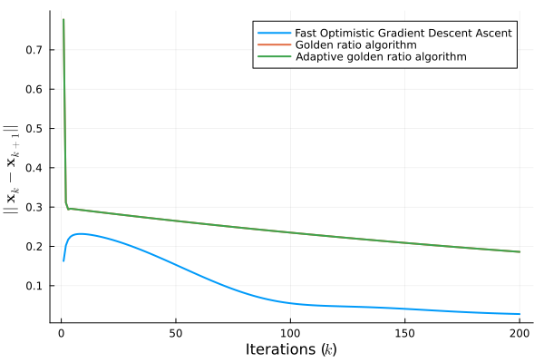

Skew-symmetric operator
A simple example of monotone operator that is not (even locally) strongly monotone is the skewed-symmetric operator [2], $F : \mathbb{R}^{MN} \to \mathbb{R}^{MN}$, which is described as follows
\[\begin{equation} F(\mathbf{x}) = \begin{bmatrix} \mathbf{A}_1 & & \\ & \ddots & \\ & & \mathbf{A}_M \end{bmatrix} \mathbf{x} \end{equation}\]
for a given $M \in \mathbb{N}$, where $\mathbf{A}_i = \text{tril}(\mathbf{B}_i) - \text{triu}(\mathbf{B}_i)$, for some arbitrary $0 \preceq \mathbf{B}_i \in \mathbb{R}^{N \times N}$, for all $i = 1, \dots, M$. Let's implement it by first creating the problem data
using Random, LinearAlgebra
using Monviso, BlockDiagonals
Random.seed!(2024)
M, N = 20, 10
Bs = [let X = rand(N, N); X' * X; end for _ in 1:M]
A = BlockDiagonal([tril(B) .- triu(B) for B in Bs])Then, let's define $\mathbf{F}(\cdot)$ with it's Lipschitz constant $L$
F(x) = A * x
L = norm(A)Finally, let's create the iterate functions and an initial solution
fogda_iter = fast_optimistic_gradient_descent_ascent(F)
graal_iter = golden_ratio_algorithm(F)
agraal_iter = adaptive_golden_ratio_algorithm(F)
x0 = rand(N * M)The vector map $\mathbf{F}(\cdot)$ is merely monotone; we can use and compare three different algorithms: fast optimistic gradient descent-ascent (Monviso.fast_optimistic_gradient_descent_ascent), golden ratio (Monviso.golden_ratio_algorithm), adaptive golden ratio (Monviso.adaptive_golden_ratio_algorithm)
GOLDEN_RATIO = 0.5(1 + sqrt(5))
max_iter = 200
residuals = (
fogda = Vector{Float32}(undef, max_iter),
graal = Vector{Float32}(undef, max_iter),
agraal = Vector{Float32}(undef, max_iter)
)
# Copy the same initial solution for the three methods
let sol_fogda = (xk = x0, x1k = x0, y1k = x0),
sol_graal = (xk = x0, yk = x0),
sol_agraal = (xk = x0, x1k = rand(N * M), yk = x0, s1k = GOLDEN_RATIO/(2L), tk = 1)
for k in 1:max_iter
# Fast Optimistic Gradient Descent Ascent
xk1_fogda, yk_fogda = fogda_iter(sol_fogda..., k, 1/(4L))
residuals.fogda[k] = norm(xk1_fogda - sol_fogda.xk)
sol_fogda = (xk = xk1_fogda, x1k = sol_fogda.xk, y1k = yk_fogda)
# Golden ratio algorithm
xk1_graal, yk1_graal = graal_iter(sol_graal..., GOLDEN_RATIO/(2L))
residuals.graal[k] = norm(xk1_graal - sol_graal.xk)
sol_graal = (xk = xk1_graal, yk = yk1_graal)
# Adaptive golden ratio algorithm
xk1_agraal, yk1_agraal, sk_agraal, tk1_agraal = agraal_iter(sol_agraal...)
residuals.agraal[k] = norm(xk1_agraal - sol_agraal.xk)
sol_agraal = (xk = xk1_agraal, x1k = sol_agraal.xk, yk = yk1_agraal, s1k = sk_agraal, tk = tk1_agraal)
end
endThe API docs have some detail on the convention for naming iterative steps. Let's check out the residuals for each method.
using Plots, LaTeXStrings
plot(
1:max_iter, [residuals.fogda, residuals.graal, residuals.agraal];
xlabel=L"Iterations ($k$)",
ylabel=L"$||\mathbf{x}_k - \mathbf{x}_{k+1}||$",
labels=[
"Fast Optimistic Gradient Descent Ascent"
"Golden ratio algorithm"
"Adaptive golden ratio algorithm"
] |> permutedims,
linewidth=2
)